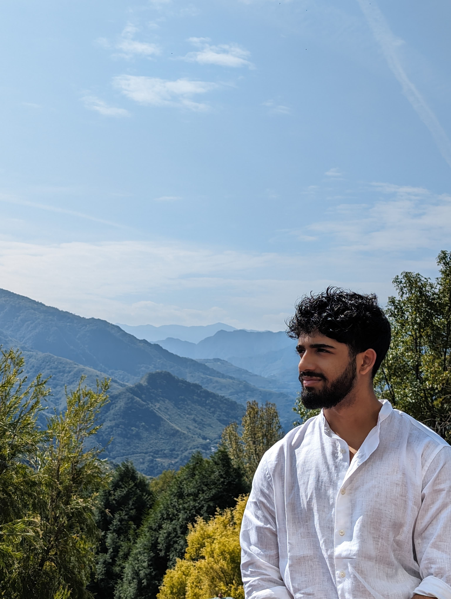

(Yuvraj Kumar)
I was a boarder at St. Paul's School in London between 2022 and 2024 where I studied Further Maths, Maths, Physics, and Economics for A-Levels. I'm currently on a gap year and will be studying BA Mathematics at Oxford University starting in October 2025. At the moment, I'm learning full-stack web development, ML/AI, C++, and building random things. In the future, I want to solve problems with technology.